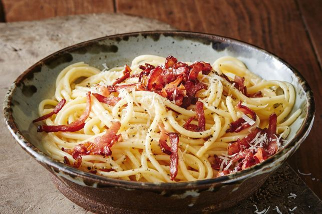

Smoky Bacon Carbonara recipe by Matt Preston & Michelle Southan
ALLERGEN WARNING!! PROCEED WITH EXTRA CAUTION-Allergens
Recipe may contain gluten, wheat, egg, milk and lactose.
Gather 'round for the tale of Australian Smoky Bacon Carbonara!
Picture this: the classic Italian carbonara, with its guanciale and eggs, was perfectly fine—until Australians decided to spice things up. They swapped the fancy Italian pork for good ol' smoky bacon, added a splash of cream (because why not?), and created a dish that’s basically carbonara with a down-under twist.
The result? A creamy, smoky delight that says, "Forget tradition, let's just enjoy some bacon." It’s the kind of dish that proves sometimes, breaking the rules makes for a tastier story.
INGREDIENT LIST
- 400g dried bucatini pasta
- 300g smoky bacon rashers, rind removed, cut into thin strips
- 5 eggs
- 80g (1 cup) mild cheddar, coarsely grated
- 70g (1 cup) parmesan, shredded, plus extra, to serve
STEPS
- Cook the pasta in a large saucepan of boiling salted water following packet directions. Drain. Reserve 2 tbs of the cooking liquid. Return the pasta to the pan.
- Meanwhile, heat a non-stick frying pan over medium-high heat. Add the bacon and cook, stirring occasionally, for 5 minutes or until crisp. Use a slotted spoon to remove the bacon, reserving the fat in the pan.
- Whisk the eggs together in a large jug. Add the fat from the pan (about 1 tbs of fat) and whisk until well combined. Whisk in the cheddar and parmesan.
- Add the egg mixture to the hot pasta and toss until well combined. Add the reserved cooking liquid and toss until well combined. Return to low heat and toss continuously for 1 minute or until the pasta is warmed through, being careful not to overcook, or the egg will scramble. Divide among serving bowls and sprinkle with the crispy bacon. Season with pepper and extra parmesan.

YOU DID WELL!!